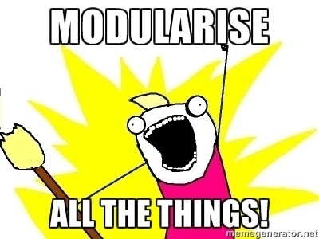
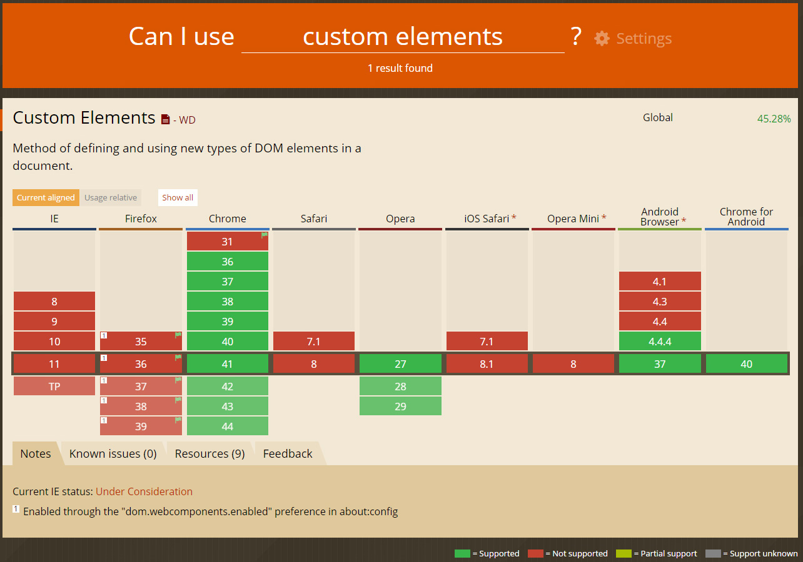
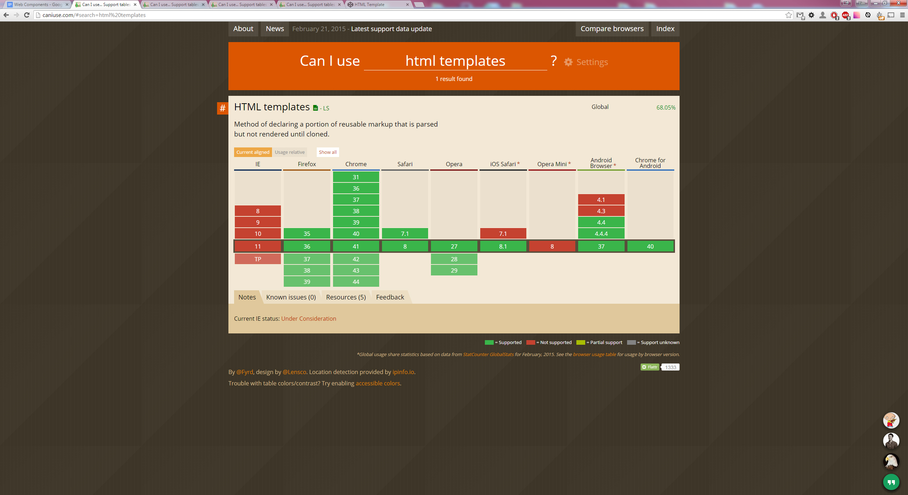

Web Components
By Tim Mansell / @timmansell
What are Web Components?
They are a new HTML5 standard to build reusable components for the web. They contain a set of custom elements, JavaScript, and styles unique to a specific component.
But first... a little history
Web 1.0
Nested slides are useful for adding additional detail underneath a high level horizontal slide.
Web 2.0
That's it, time to go back up.
Issues with this approach
- JS & CSS bleeding all over the page:
- scoping styles
- specificity conflicts
- Non-semantic (descriptive) code.
- "div soup"
DIVs are the new Tables
There must be a better way
- What if browsers made it easier to build modular, more encapsulated code?
- What if we could teach new elements to the browser?
Web Components to the rescue!
So what are exactly Web Components?
- Custom Elements
- HTML Templates
- Shadow DOM
- HTML Imports
Current way of doing things
Yesterday
vs
Today
Web Components
Bootstrap Grid
Yesterday
...
...
Today
...
...
Tabs
Yesterday
Today
Home
Profile
Messages
Custom Elements
Custom Elements enable developers to create their own custom HTML/DOM elements. It enables easier component reuse.
Let's create a custom element
var XFoo = document.registerElement('x-foo');
Now you can use <x-foo> wherever you want in the document.
By default, custom elements inherit from HTMLElement. Thus, the previous example is equivalent to:
var XFoo = document.registerElement('x-foo', {
prototype: Object.create(HTMLElement.prototype)
});
Rules
You need to have at least one '-' inside the name of a custom element. Any tag names without '-' will result in an error.
Good
- x-component
- x-web-component
Bad
- xcomponent
- x_component
Extending native elements
Type Extension Custom Element
You can create a custom element that extends a native HTML element's features.
To use the element, use the original tag and specify the custom tag name using the "is" attribute.
var XComponent = document.registerElement('x-component', {
extends: 'input',
prototype: Object.create(HTMLInputElement.prototype)
});
What is the benefit of this?
The benefit of using this is that even if JavaScript is turned off or the browser doesn't support Custom Elements (including polyfill), the element will still show, but fallback to it’s base state.
 https://github.com/github/time-elements
https://github.com/github/time-elements
Lifecycle callbacks
- .createdCallback() Called after the element is created.
- .attachedCallback() Called when the element is attached to the document
- .detachedCallback() Called when the element is detached from the document.
- .attributeChangedCallback() Called when one of attributes of the element is changed.
Browser Support
 http://caniuse.com/#feat=custom-elementsHTML Templates
Web Components

To load onto page.
Browser Support
 http://caniuse.com/#search=html%20templatesShadow DOM
With Shadow DOM it is finally possible to write CSS rules that aren't global, enabling true modular development.
What is Shadow DOM?
An element that has a shadow root associated with it is called "shadow host". The shadow root can be treated as an ordinary DOM element so you can append arbitrary nodes to it.

With Shadow DOM, all markup and CSS are scoped to the host element. In other words, CSS styles defined inside a Shadow Root won't affect its parent document, CSS styles defined outside the Shadow Root won't affect the main page.
var host = document.querySelector('button'),
root = host.createShadowRoot();
root.textContent = 'Hello, shadow world!';
Combining with HTML Templates
See the Pen HTML Template and Shadow Dom by Tim Mansell (@TimMansell) on CodePen.
http://codepen.io/TimMansell/pen/embbYyBrowser Support
 http://caniuse.com/#search=shadow%20dom
http://caniuse.com/#search=shadow%20dom
HTML Imports
HTML Templates, Shadow DOM, and Custom Elements enable you to build UI components easier than before. But it's not efficient to load each resources such as HTML, CSS and JavaScript separately.
HTML Imports allow you to load those resources as an aggregated HTML file.
Let’s put it all together
x-component.html
index.html
<head>
</head>
<body>
This is Custom Element
</body>
Browser Support
 http://caniuse.com/#search=shadow%20dom
http://caniuse.com/#search=shadow%20dom
TIL that we're all using Web Components
What about SEO?
“Because Polymer makes use of polyfills, search engines should treat Polymer-based applications no differently than they do other javascript-based web apps. In fact, Google’s crawler understands JavaScript heavy applications.Going forward, it is a reasonable assumption that as use of native Shadow DOM increases, search engine providers will try to adapt to understand it, just as they have adapted to other new web technologies in the past.”Polymer Team
Accesibility you say?
“Results from initial testing indicate that inclusion of ARIA roles, states and properties in content wholly inside the Shadow DOM works fine. The accessibility information is exposed correctly via the accessibility API. Screen readers can access content in the Shadow DOM without issue.“
Steve Faulkner
http://www.paciellogroup.com/blog/2012/07/notes-on-web-components-aria/“Web Components, including Shadow DOM, are accessible because assistive technologies encounter pages as rendered, meaning the entire document is read as “one happy tree”.
Marcy Sutton
http://substantial.com/blog/2014/02/05/accessibility-and-the-shadow-dom/So we can start using it now? Yeah?
You sure can! But what about IE?
Pollyfills
"a polyfill (or polyfiller) is downloadable code which provides facilities that are not built into a web browser. It implements technology that a developer expects the browser to provide natively, providing a more uniform API landscape."
Pollyfills
 Polymer
Polymer <x>
<x> Bosonic
Bosonic webcomponents.js
webcomponents.js
Out in the wild
<google-map></google-map>
<chart-elements></chart-elements>
<x-gangnam-style></x-gangnam-style>
<polymer></polymer>
customelements.io
a web components gallery for modern web apps
Food for thought
What if… the entire web platform was hosted on Github?
https://github.com/domenic/html-as-custom-elements
Themes
reveal.js comes with a few themes built in:
Black (default) -
White -
League -
Sky -
Beige -
Simple
Serif -
Night -
Moon -
Solarized
Slide Backgrounds
Set data-background="#dddddd" on a slide to change the background color. All CSS color formats are supported.
Image Backgrounds
<section data-background="image.png">Tiled Backgrounds
<section data-background="image.png" data-background-repeat="repeat" data-background-size="100px">Video Backgrounds
<section data-background-video="video.mp4,video.webm">Background Transitions
Different background transitions are available via the backgroundTransition option. This one's called "zoom".
Reveal.configure({ backgroundTransition: 'zoom' })Background Transitions
You can override background transitions per-slide.
<section data-background-transition="zoom">Pretty Code
function linkify( selector ) {
if( supports3DTransforms ) {
var nodes = document.querySelectorAll( selector );
for( var i = 0, len = nodes.length; i < len; i++ ) {
var node = nodes[i];
if( !node.className ) {
node.className += ' roll';
}
}
}
}
Code syntax highlighting courtesy of highlight.js.
Marvelous List
- No order here
- Or here
- Or here
- Or here
Fantastic Ordered List
- One is smaller than...
- Two is smaller than...
- Three!
Tabular Tables
| Item | Value | Quantity |
|---|---|---|
| Apples | $1 | 7 |
| Lemonade | $2 | 18 |
| Bread | $3 | 2 |
Clever Quotes
These guys come in two forms, inline:
“The nice thing about standards is that there are so many to choose from”
and block:
“For years there has been a theory that millions of monkeys typing at random on millions of typewriters would reproduce the entire works of Shakespeare. The Internet has proven this theory to be untrue.”
Intergalactic Interconnections
You can link between slides internally, like this.
Speaker View
There's a speaker view. It includes a timer, preview of the upcoming slide as well as your speaker notes.
Press the S key to try it out.
Export to PDF
Presentations can be exported to PDF, here's an example:
Global State
Set data-state="something" on a slide and "something"
will be added as a class to the document element when the slide is open. This lets you
apply broader style changes, like switching the page background.
State Events
Additionally custom events can be triggered on a per slide basis by binding to the data-state name.
Reveal.addEventListener( 'customevent', function() {
console.log( '"customevent" has fired' );
} );
Take a Moment
Press B or . on your keyboard to pause the presentation. This is helpful when you're on stage and want to take distracting slides off the screen.
Much more
- Right-to-left support
- Extensive JavaScript API
- Auto-progression
- Parallax backgrounds
- Custom keyboard bindings